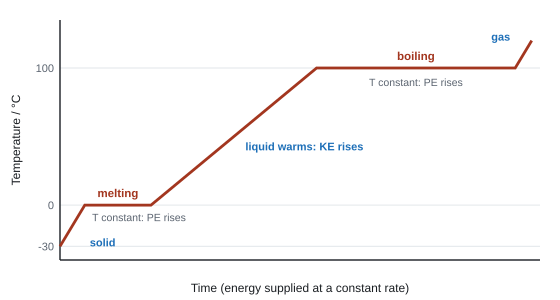
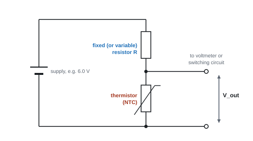
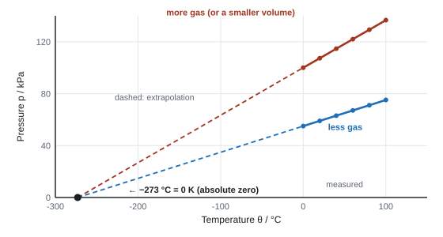
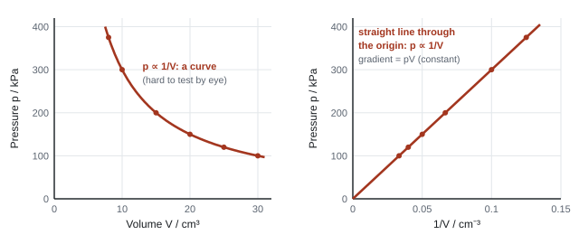

Thermodynamics
This topic is about what heating actually does to matter. You will see where the energy goes when something warms up or melts, why there is a coldest possible temperature, and how the steady pressure of a gas comes from countless tiny collisions. By the end you will be able to derive the link between how fast molecules move and how hot the gas is.
How Unit 5 calculations are marked
Every calculation earns "use of" marks for each step you write down, so show each substitution. Give a final answer with its unit. In a "show that" question, give your answer to one more significant figure than the value printed (3 s.f. for a 2 s.f. value) and never just quote it back. When the question makes a claim, the last mark is a numerical comparison plus a verdict ("48 °C is less than 60 °C, so the claim is not correct"). Temperatures in gas, kinetic-theory and black-body equations must be in kelvin: T/K = θ/°C + 273.
The data and formulae booklet gives every equation in this unit, plus k, G, σ, c, e and u. It does not give 4πr² (area of a sphere), ⁴⁄₃πr³ (volume of a sphere), ρ = m/V, p = F/A or the centripetal force equations: learn those.
Spec125Specific heat capacity and specific latent heat
Use ΔE = mcΔθ for a temperature change and ΔE = LΔm for a change of state.
Specific heat capacity
- The specific heat capacity c of a material is the energy needed to raise the temperature of 1 kg of it by 1 K (or 1 °C).
Heating with no change of state
- ΔE = energy transferred (J); m = mass (kg); c = specific heat capacity (J kg⁻¹ K⁻¹); Δθ = temperature change (K or °C).
- A kelvin and a degree Celsius are the same size, so a temperature difference is the same number in both. Don't add 273 to a Δθ.
- Water has a high c (about 4200 J kg⁻¹ K⁻¹): it takes a lot of energy to warm, so it is a good coolant and heat store. Metals have low c (copper about 390 J kg⁻¹ K⁻¹): they heat up quickly. You are always given c in the question.
Specific latent heat
- During a change of state (melting, boiling, freezing, condensing) energy is transferred but the temperature stays constant.
- The specific latent heat L is the energy needed to change the state of 1 kg of a substance without changing its temperature.
- Fusion (Lf): solid ↔ liquid. Water: 3.34 × 10⁵ J kg⁻¹.
- Vaporisation (Lv): liquid ↔ gas. Water: 2.26 × 10⁶ J kg⁻¹.
Change of state at constant temperature
- ΔE = energy (J); L = specific latent heat (J kg⁻¹); Δm = mass that changes state (kg).
- Lv is about 7 times Lf. Melting only loosens the molecules (they stay close together). Boiling separates them completely, and the gas also has to push back the atmosphere as it expands, so far more energy is needed per kilogram.
The heating curve

- Sloping sections: one state is warming; ΔE = mcΔθ. The liquid line is less steep than the solid line because water's c (4200) is about twice ice's c (2100 J kg⁻¹ K⁻¹).
- Flat sections: state is changing; ΔE = LΔm. Temperature (so mean molecular KE) is constant; the energy goes into potential energy of the molecules as bonds between them are broken.
- At constant power P, the time on each section is ΔE/P. So a flat section's length is proportional to L, and a sloping section's gradient is P/(mc).
Linking to power and time
Energy, power and time
- An electric heater: P = VI, so ΔE = VIt. For a flowing liquid, use the mass per second: P = (m/t)cΔθ.
Heat then boil
A 2.4 kW kettle holds 1.5 kg of water at 18 °C. It heats the water to 100 °C and then boils away 0.20 kg. Assume all the energy goes into the water. c = 4180 J kg⁻¹ K⁻¹, Lv = 2.26 × 10⁶ J kg⁻¹. How long is the kettle on?
Heating: ΔE₁ = mcΔθ = 1.5 × 4180 × (100 − 18) = 5.14 × 10⁵ J
Boiling: ΔE₂ = LΔm = 2.26 × 10⁶ × 0.20 = 4.52 × 10⁵ J
Total: ΔE = 5.14 × 10⁵ + 4.52 × 10⁵ = 9.66 × 10⁵ J
t = ΔE/P = 9.66 × 10⁵ / 2400 = 403 s, so t ≈ 400 s (2 s.f.).
A real kettle takes longer: energy is also transferred to the kettle and the surroundings.
Ice in a drink (energy balance)
0.030 kg of ice at 0 °C is put into 0.25 kg of water at 20 °C. Find the final temperature θ. Ignore the cup and the surroundings. Lf = 3.34 × 10⁵ J kg⁻¹, c = 4180 J kg⁻¹ K⁻¹.
Energy lost by the warm water = energy to melt the ice + energy to warm the melted ice from 0 °C to θ:
0.25 × 4180 × (20 − θ) = 0.030 × 3.34 × 10⁵ + 0.030 × 4180 × θ
20 900 − 1045θ = 10 020 + 125.4θ
θ = 10 880 / 1170.4 = 9.3 °C
A 2.2 kW kettle contains 0.80 kg of water at 18 °C. (a) Calculate the minimum time it takes to bring the water to 100 °C. (b) In practice it takes 150 s. Calculate the efficiency of the kettle. (\(c_{\text{water}} = 4180\ \text{J kg}^{-1}\,\text{K}^{-1}\))
Show solution
(a) Energy needed by the water:
\[ \Delta E = mc\Delta\theta = 0.80 \times 4180 \times (100 - 18) = 2.74 \times 10^{5}\ \text{J} \]The minimum time assumes every joule goes into the water:
\[ t = \frac{\Delta E}{P} = \frac{2.742 \times 10^{5}}{2200} = 125\ \text{s} \](b) Energy actually supplied \(= 2200 \times 150 = 3.30 \times 10^{5}\ \text{J}\), so
\[ \text{efficiency} = \frac{2.742 \times 10^{5}}{3.30 \times 10^{5}} = 0.83 = 83\% \]The rest heated the kettle itself and escaped to the room.
0.200 kg of ice at −15 °C is heated until it becomes water at 40 °C. (a) Calculate the energy needed. (b) How long does this take with a 500 W heater, assuming no losses? (\(c_\text{ice} = 2100\ \text{J kg}^{-1}\,\text{K}^{-1}\), \(c_\text{water} = 4180\ \text{J kg}^{-1}\,\text{K}^{-1}\), \(L_\text{f} = 3.34 \times 10^{5}\ \text{J kg}^{-1}\))
Show solution
Warm the ice from −15 °C to 0 °C:
\[ \Delta E_1 = 0.200 \times 2100 \times 15 = 6300\ \text{J} \]Melt it at 0 °C:
\[ \Delta E_2 = 0.200 \times 3.34 \times 10^{5} = 66\,800\ \text{J} \]Warm the water from 0 °C to 40 °C:
\[ \Delta E_3 = 0.200 \times 4180 \times 40 = 33\,440\ \text{J} \](a) Total: \(\Delta E = 6300 + 66\,800 + 33\,440 = 1.07 \times 10^{5}\ \text{J}\)
(b) \(t = \dfrac{\Delta E}{P} = \dfrac{1.065 \times 10^{5}}{500} = 213\ \text{s}\). Notice that melting takes more energy than the other two stages put together.
Lay every multi-step question out the way the mark scheme splits it: (1) mass from ρ = m/V if you're given a volume, (2) mcΔθ, (3) LΔm, (4) add them, (5) P = ΔE/t, (6) compare with the claim. Each step is a mark. Pick the right L: fusion for melting or freezing, vaporisation for boiling, evaporating or condensing.
- "Use of ΔE = mcΔθ", "use of ΔE = LΔm", "use of P = ΔE/t", "both energies added".
- "Substitution for Δθ must be a temperature difference. Ignore attempt to convert to kelvin" (WPH15 Jan 2026).
- Why the real value differs: "energy is transferred (from the water) to the surroundings" / "not all of the energy from the heater is used to raise the water temperature".
- In a flat section: "temperature (so kinetic energy) is constant", "the energy increases the potential energy of the molecules".
Often asked as: kettle or pool heating then boiling; melting ice (ice palace, ice cubes in a drink, ice in fuel); coolant flow rate; reading c or L from a graph; comparing a calculated energy, time or mass with a claim.
Forgetting one of the two energies (the latent heat part is the one most often lost). Writing E = P/t instead of E = Pt. Using the wrong c when two substances are present. Mixing up energy and power. Using Lf for boiling. Not finishing with the comparison the question asked for. In a "show that", giving the same number of s.f. as the printed value.
Examined in past papers even though the spec doesn't list it.
- Efficiency = useful energy (or power) out ÷ total in × 100%: e.g. a microwave oven's efficiency from the temperature rise it produces (WPH15 Oct 2020).
- Reading a latent heat from the gradient of an energy-against-mass graph (WPH15 Jan 2026).
- When gravitational energy becomes thermal energy (a falling droplet), mgΔh = mcΔθ, so mass cancels and Δθ doesn't depend on the mass (WPH15 Jun 2022).
- A lid on a pan saves energy: less steam escapes, and steam condensing on the lid gives its latent heat back to the pan (WPH15 Jan 2025).
Spec126Core practical 12: thermistor in a potential divider as a thermostat
Calibrate a thermistor in a potential divider so that its output voltage can be used to measure, or switch on at, a set temperature.
The physics you need
- An NTC thermistor: its resistance falls as temperature rises (more charge carriers are released). The R–θ graph is a curve, steep at low temperature.
- In a potential divider of a fixed resistor R and the thermistor RT across a supply Vin, the output across the thermistor is
Potential divider output

- Thermostat idea: the output feeds a switch (a transistor or relay) that turns on at a set voltage. Take the output across the fixed resistor to switch a cooling fan on when it gets hot; take it across the thermistor to switch a heater on when it gets cold. Making R a variable resistor lets you set the switching temperature.
Core practical 12: method
- Connect the thermistor to an ohmmeter (or a supply, ammeter and voltmeter, with R = V/I) for the calibration of R against θ. For the thermostat, connect it in the potential divider with a voltmeter across the output.
- Put the thermistor in a beaker of water with a thermometer (or temperature sensor and data logger) next to it. Add ice to start at about 0 °C.
- Heat the water gently (Bunsen burner, or a kettle/immersion heater) towards 100 °C, stirring so the temperature is the same throughout.
- Every 5 °C or so, stir, wait for the reading to settle, then read the temperature and the resistance (or Vout) at the same moment.
- Plot R against θ (or Vout against θ): this is the calibration curve. To use it as a thermometer, measure R or Vout and read off θ.
- Repeat as the water cools and average the two readings at each temperature.
Variables: independent = temperature; dependent = resistance (or Vout); control = supply p.d., fixed resistor value, same thermistor.
Safety: hot water and a hot tripod; keep leads away from the flame; keep electrical meters away from spilled water.
Output voltage
A 6.0 V supply, a 1.5 kΩ fixed resistor and a thermistor whose resistance is 1.0 kΩ at 40 °C. Find Vout across the thermistor at 40 °C.
Vout = 6.0 × 1.0/(1.5 + 1.0) = 2.4 V
If the thermistor warms to 60 °C its resistance falls, so Vout across it falls below 2.4 V.
Sources of error and improvements
- The thermometer and thermistor must be at the same temperature: put them side by side and stir.
- Small current only: a large current heats the thermistor itself, so switch off between readings if you use V and I.
- The thermometer's resolution (1 °C) limits precision; use a digital sensor with a data logger for many readings.
- Zero the ohmmeter; read the thermometer at eye level.
Indicative content from the 6-mark planning questions (WPH15 Oct 2023, Oct 2024):
- thermistor connected to an ohmmeter, or to an ammeter and voltmeter;
- placed in a water bath / beaker of water; ice added to reach 0 °C, then heated to near 100 °C;
- "use a thermometer to measure the temperature" (tie the reading to the resistance "for a particular temperature");
- stir so the temperature is uniform;
- plot resistance against temperature to give the calibration curve; repeat or take enough readings across the range.
Often asked as: a 6-mark "describe how to calibrate" question with a labelled diagram. The potential-divider (thermostat) part has not yet been examined in WPH15, but it uses Unit 4 potential-divider physics.
Writing a list of apparatus instead of a method in order. Saying "use a thermometer" without saying it measures the temperature. Confusing the thermistor with a thermometer, or saying the ohmmeter measures p.d. Writing the whole answer about an ordinary resistor. Giving no realistic way to heat or cool the water.
Examined in past papers even though the spec doesn't list it.
- The range matters: water lets you go from 0 °C (melting ice) to about 100 °C (boiling), so the calibration covers that range only (WPH15 Oct 2023).
Spec127Core practical 13: specific latent heat
Measure the specific latent heat of a change of state (fusion of ice, or vaporisation of water).
Principle
Supply a known amount of energy with an electrical heater, measure the mass that changes state, then
Specific latent heat from a heater
Core practical 13: method (fusion of ice)
- Set up two funnels of crushed ice draining into beakers. One has an immersion heater (the test); the other is identical with no heater switched on (the control).
- Wait until the ice is at 0 °C and dripping steadily, then empty both beakers.
- Switch on the heater for a measured time t. Record V and I (or read a joulemeter) to get ΔE = VIt.
- Weigh the water collected in each beaker. Mass melted by the heater: Δm = mtest − mcontrol. The control corrects for ice melted by heat from the room.
- Lf = ΔE/Δm. Repeat and average.
Vaporisation version: stand a beaker of water with an immersion heater on a balance. Once it boils steadily, start timing and record the mass lost in time t. Lv = VIt/Δm. Doing this at two different powers and subtracting cancels the heat lost to the surroundings.
Safety: hot heater element; keep water off the balance and mains; handle ice with tongs.
Latent heat of fusion
Heater: 12.0 V, 4.2 A, switched on for 300 s. Water collected: test funnel 52.0 g, control funnel 7.5 g.
ΔE = VIt = 12.0 × 4.2 × 300 = 15 120 J
Δm = 52.0 − 7.5 = 44.5 g = 0.0445 kg
Lf = 15 120 / 0.0445 = 3.4 × 10⁵ J kg⁻¹ (accepted value 3.34 × 10⁵ J kg⁻¹)
Errors: which way do they push L?
| Error | Effect on the calculated L |
|---|---|
| Energy from the heater lost to the surroundings (ΔE used is more than the energy reaching the ice) | L too high |
| Ice melted by the room counted as melted by the heater (no control) | L too low |
| Heater left on longer than the recorded time | measured Δm too big for the ΔE recorded, so L too low |
| Ice not at 0 °C (some energy warms it first) | L too high |
- L = (energy transferred)/(mass changed); with a heater, "L = Pt/Δm".
- "Energy escapes to the surroundings, so the calculated L is too high."
- A control funnel "accounts for ice melted by the surroundings".
Often asked as: an MCQ on which error gives a value that is too low or too high (WPH15 Jun 2026); latent-heat calculations in context. The full method has not been asked step by step.
Forgetting to convert g to kg. Using the total mass of ice instead of the mass that melted. Thinking a temperature is the dependent variable: it stays at 0 °C; you measure mass.
Spec128Internal energy
Understand internal energy as the sum of the randomly distributed kinetic and potential energies of the molecules in a system.
What it is
- The internal energy of a system is the sum of the kinetic energies and potential energies of all its molecules, which are randomly distributed among them.
- Kinetic energy comes from the random motion of the molecules (vibrating in a solid; moving around in a liquid and gas). Mean KE depends on temperature.
- Potential energy comes from the forces between molecules and depends on their separation. Breaking the attractions (melting, boiling) increases the PE.
- "Randomly distributed": at any moment some molecules are fast and some slow; the energy is shared out unevenly and keeps changing in collisions. Only the mean KE is fixed by temperature.
- Internal energy is not the KE of the object as a whole. A ball thrown across a room doesn't get hotter because it is moving.
How internal energy changes
| Process | KE of molecules | PE of molecules | Internal energy |
|---|---|---|---|
| Heating a solid, liquid or gas (temperature rising) | rises | (small change) | rises |
| Melting or boiling at constant temperature | constant | rises | rises |
| Freezing or condensing at constant temperature | constant | falls | falls |
| Cooling (temperature falling) | falls | (small change) | falls |
- Internal energy rises when energy is transferred in by heating or when work is done on the system (e.g. compressing a gas).
- For an ideal gas there are no forces between molecules (except in collisions), so there is no potential energy. Its internal energy is all kinetic: U = N × ³⁄₂kT (see 132).
Internal energy of an ideal gas
A container holds 1.20 × 10²⁴ molecules of an ideal gas at 20 °C. Find its internal energy. k = 1.38 × 10⁻²³ J K⁻¹.
T = 20 + 273 = 293 K
Mean KE per molecule = ³⁄₂kT = 1.5 × 1.38 × 10⁻²³ × 293 = 6.07 × 10⁻²¹ J
U = N × ³⁄₂kT = 1.20 × 10²⁴ × 6.07 × 10⁻²¹ = 7.3 × 10³ J
6-mark cooling-curve question (wax cooling, with a flat section XY) (WPH15 Jun 2023):
- "internal energy decreases" as the wax cools;
- "internal energy is the sum of the (random) potential and kinetic energies of the molecules";
- as the temperature falls, "the kinetic energy of the molecules decreases";
- between X and Y the wax is solidifying: "temperature (so KE) is constant" and "the potential energy of the molecules decreases".
- Ideal gas: "do not credit NkT as internal energy"; U = N × ³⁄₂kT (WPH15 Oct 2024).
Often asked as: describe how internal energy changes on a heating or cooling curve; calculate U for an ideal gas; MCQ on what mean KE depends on.
Saying the PE rises as KE falls "to keep the internal energy constant". Internal energy is not constant: it falls on cooling. Saying internal energy stays the same on a flat section of a cooling curve (the PE is changing). Writing about "energy" or "particles" with no mention of molecules. Using ³⁄₂kT (one molecule) as the internal energy of the whole gas, or multiplying by N when only one molecule's mean KE was asked for.
Examined in past papers even though the spec doesn't list it.
- U = ³⁄₂pV for an ideal gas: U = N × ³⁄₂kT and NkT = pV. Derive it by writing these two steps; "do not credit substituting N = 1" (WPH15 Jun 2026).
- Microwave heating: water molecules are made to rotate and collide with neighbours, increasing their KE, so "the internal energy and hence the temperature" rise. Molecules in ice can't rotate, so ice heats poorly (WPH15 Oct 2020).
Spec129Absolute zero and the meaning of temperature
Understand absolute zero, and that the average kinetic energy of the molecules is proportional to the absolute (kelvin) temperature.
Absolute zero and the kelvin scale
- Absolute zero (0 K = −273 °C, more precisely −273.15 °C) is the lowest possible temperature: the molecules have their minimum kinetic energy (in the simple model, zero). Nothing can be colder, so there are no negative kelvin temperatures.
- Converting:
Kelvin and Celsius
- The two scales have the same size of degree, so a change of 1 K equals a change of 1 °C.
Evidence from the gas laws

- On the kelvin scale the same graph is a straight line through the origin: p ∝ T. That only works because the kelvin scale starts at absolute zero.
Mean KE is proportional to absolute temperature
- For an ideal gas the mean KE of a molecule is ½m⟨c²⟩ = ³⁄₂kT (spec point 132), so mean KE ∝ T in kelvin. Doubling T in kelvin doubles the mean KE; doubling the Celsius temperature does not.
- At the same temperature, every gas has the same mean KE per molecule. Lighter molecules therefore move faster.
Why heating a gas raises its pressure (the 6-mark chain)
- Temperature rises, so the mean kinetic energy of the molecules rises.
- So their mean (r.m.s.) speed rises, and their momentum rises.
- Each collision with the wall gives a bigger change of momentum.
- Molecules hit the walls more often (a higher rate of collision).
- So the rate of change of momentum at the walls rises, which means a bigger force on the walls (F = Δp/Δt).
- Pressure = force/area, so the pressure rises (volume fixed).
Pressure and temperature
A sealed tyre (fixed volume) is at 2.4 × 10⁵ Pa at 12 °C. After a drive the air is at 35 °C. Find the new pressure.
p ∝ T at constant V and N, so p₂ = p₁ × T₂/T₁
p₂ = 2.4 × 10⁵ × (35 + 273)/(12 + 273) = 2.4 × 10⁵ × 308/285 = 2.6 × 10⁵ Pa
Using Celsius (35/12) would give a wildly wrong 7.0 × 10⁵ Pa.
- "average kinetic energy (of the molecules) increases", "(rms) speed increases" / "momentum increases", "greater change in momentum per collision", "more collisions per second with the walls", "rate of change of momentum increases so force increases", "p = F/A, so pressure increases".
- "Do not accept collisions between molecules": the collisions that matter are with the walls (WPH15 Jun 2021).
Often asked as: 6-mark "explain why the pressure falls when the football cools", "why the air tank's pressure changes", "why the balloon expands"; short 2–3 mark versions; MCQ: pressure quadruples, so T (in K) quadruples.
Stopping at "the molecules move faster". You must go on to momentum change, collision rate, force and pressure. Saying the molecules collide with each other more. Not linking rate of change of momentum to force. Forgetting to use kelvin in a ratio.
Examined in past papers even though the spec doesn't list it.
- Comparing gases at the same temperature: same mean KE, so the lighter gas has the higher r.m.s. speed (WPH15 Jan 2021, Oct 2025).
Spec130The ideal gas equation pV = NkT
Use pV = NkT for an ideal gas.
The equation
Ideal gas equation
- p = pressure (Pa); V = volume (m³); N = number of molecules (no unit); k = Boltzmann constant = 1.38 × 10⁻²³ J K⁻¹; T = absolute temperature (K).
- k links the microscopic world (energy of one molecule) to temperature. It is tiny because one molecule carries very little energy.
- Use this form, not pV = nRT. The data booklet for this specification gives k, not R or NA, and examiners report that the nRT route usually fails.
Converting units first
| Quantity | Convert to |
|---|---|
| θ in °C | T = θ + 273 K |
| V in cm³ | × 10⁻⁶ m³ |
| V in dm³ (litres) | × 10⁻³ m³ |
| p in kPa | × 10³ Pa |
| mass of one molecule | A × 1.66 × 10⁻²⁷ kg (A = relative molecular mass) |
The gas laws that follow (fixed amount of gas, N constant)
- pV/T = Nk = constant, so
Fixed amount of gas: before and after
- Boyle's law: constant T, p ∝ 1/V (spec point 131).
- Charles's law: constant p, V ∝ T.
- Pressure law: constant V, p ∝ T.
- At constant V and T, p ∝ N: let out half the molecules and the pressure halves.
What "ideal" means
An ideal gas obeys pV = NkT exactly. Kinetic theory models it with these assumptions: a very large number of molecules in random motion; the molecules' own volume is negligible compared with the container; no forces between molecules except during collisions; collisions are elastic; collision time is negligible compared with the time between collisions. Real gases behave nearly ideally at low pressure and high temperature.
Number and mass of molecules
A 0.050 m³ cylinder holds helium at 2.0 × 10⁶ Pa and 17 °C. Find the number of molecules and the mass of helium (relative mass 4.0).
T = 17 + 273 = 290 K
N = pV/kT = (2.0 × 10⁶ × 0.050)/(1.38 × 10⁻²³ × 290) = 2.5 × 10²⁵
Mass of one atom = 4.0 × 1.66 × 10⁻²⁷ = 6.64 × 10⁻²⁷ kg
Total mass = 2.5 × 10²⁵ × 6.64 × 10⁻²⁷ = 0.17 kg
A rising bubble
A 2.0 cm³ air bubble is released 12 m below the surface of a lake where the water is at 8 °C. The surface water is at 18 °C. Atmospheric pressure = 1.01 × 10⁵ Pa, ρwater = 1000 kg m⁻³. Find its volume at the surface.
p₁ = patm + ρgh = 1.01 × 10⁵ + 1000 × 9.81 × 12 = 2.19 × 10⁵ Pa
V₂ = V₁ × (p₁/p₂) × (T₂/T₁) = 2.0 × (2.19 × 10⁵/1.01 × 10⁵) × (291/281) = 4.5 cm³
(A ratio of volumes, so V can stay in cm³ here; only the temperatures must be in kelvin.)
A helium cylinder of volume 0.050 m³ holds gas at 1.5 × 10⁷ Pa and 20 °C. (a) How many helium atoms does it contain? (b) What is the mass of the helium? (mass of a helium atom = 4.0 u) (c) How many balloons of volume 0.010 m³ at 1.0 × 10⁵ Pa can be filled, if the temperature stays at 20 °C?
Show solution
(a) \(T = 20 + 273 = 293\ \text{K}\), so
\[ N = \frac{pV}{kT} = \frac{1.5 \times 10^{7} \times 0.050}{1.38 \times 10^{-23} \times 293} = 1.85 \times 10^{26} \](b) \(m = 1.85 \times 10^{26} \times 4.0 \times 1.66 \times 10^{-27} = 1.23\ \text{kg}\)
(c) At constant temperature \(p_1V_1 = p_2V_2\), so at balloon pressure the gas would take up
\[ V_2 = \frac{1.5 \times 10^{7} \times 0.050}{1.0 \times 10^{5}} = 7.5\ \text{m}^3 \]But 0.050 m³ of that has to stay behind in the cylinder (it can't go below balloon pressure), leaving 7.45 m³ for balloons: \(7.45 / 0.010 = 745\) balloons.
For "before and after" questions with a fixed amount of gas, the ratio form p₁V₁/T₁ = p₂V₂/T₂ is quickest. If gas leaks out, N changes: work out N before and after with N = pV/kT, then compare (e.g. percentage remaining).
- "Use of pV = NkT [must see substitution of values of p, k and T]" (WPH15 Oct 2022).
- "Conversion of temperature to kelvin" is its own mark in nearly every question.
- "pV/T = constant" accepted for the ratio method.
- Absolute pressure at depth = atmospheric + hydrostatic (ρgh) (WPH15 Oct 2024).
- Final mark on a claim: "48 °C < 60 °C so the statement is inaccurate" (WPH15 Jan 2025).
Often asked as: p, V, N or T from the other three; number of molecules lost from a leak; mass of gas added; bubble rising from a lake bed; final temperature from a pressure ratio; gas density; balloon final temperature compared with a claim.
Using pV = nRT. Confusing the Boltzmann constant k with the Coulomb constant k. Leaving T in °C. Leaving V in cm³ when the equation needs m³ (it only cancels in a pure ratio). Misreading what a given mass refers to (e.g. "2.00 g" being the total, not the added mass). Using p ∝ T and V ∝ T one after the other instead of the combined equation.
Examined in past papers even though the spec doesn't list it.
- Gas density ρ = Nm/V = pm/kT, where m is the mass of one molecule (WPH15 Oct 2022).
- Gauge (excess) pressure = absolute pressure − atmospheric pressure, e.g. for a football (WPH15 Oct 2020).
- Hydrostatic pressure p = ρgh from Unit 1 (WPH15 Oct 2024).
- Balloons: upthrust = weight of air displaced = Vρairg. A balloon rises when upthrust > weight and floats steadily when upthrust = weight. Upthrust is not caused by the helium molecules hitting the balloon (WPH15 Oct 2025).
Spec131Core practical 14: pressure and volume of a gas at constant temperature
Investigate how the pressure of a fixed mass of gas depends on its volume at a fixed temperature (Boyle's law).
Expected result
Boyle's law

Core practical 14: method
Version A: Boyle's law apparatus. Air is trapped in a vertical glass tube above a column of oil. A foot pump pushes the oil up, compressing the air. A Bourdon gauge reads the pressure; the scale on the tube reads the volume (length × cross-sectional area, or volume directly).
- Pump to the highest pressure, close the valve and wait for the air to return to room temperature (compressing it warms it).
- Read p and V. Release a little pressure, wait again, and repeat for about 8 readings.
- Read the oil level at eye level, at the bottom of the meniscus.
Version B: loaded syringe. Seal a syringe with some air in it and clamp it vertically, plunger up. Hang masses m from the plunger (or stand them on it). The pressure is p = patm ± mg/A, where A is the plunger's cross-sectional area (from its diameter). Read V from the syringe scale; add the small volume trapped in the nozzle.
Variables: independent = volume (or the added mass); dependent = pressure; control = temperature, mass of gas (no leaks).
Processing: calculate pV for each pair, or plot p against 1/V. A straight line through the origin (or constant pV) confirms Boyle's law.
Safety: wear eye protection; don't exceed the apparatus's rated pressure; in version B keep feet clear of hanging masses.
Testing a claim that pV is constant
Readings from a graph: (100 kPa, 30.0 cm³), (150 kPa, 20.0 cm³), (240 kPa, 12.6 cm³).
pV: 100 × 10³ × 30.0 × 10⁻⁶ = 3.00 Pa m³; 150 × 10³ × 20.0 × 10⁻⁶ = 3.00 Pa m³; 240 × 10³ × 12.6 × 10⁻⁶ = 3.02 Pa m³
The three values agree to within 1%, so pV is constant and the claim is supported.
- Take at least two (better three) pairs of p and V from the graph, calculate pV for each, and conclude that pV is constant "so the claim is valid" (WPH15 Oct 2023).
- "As volume increases pressure decreases" scores nothing: it doesn't show inverse proportion.
Often asked as: use a given p–V graph to test a claim; MCQ on how a change in method affects accuracy.
Describing the trend instead of checking it with numbers. Compressing quickly and reading at once: the gas warms, so T isn't constant. Forgetting the dead volume in the syringe nozzle or gauge tubing, which makes every V too small and the p–1/V line miss the origin.
Spec132Kinetic theory: mean kinetic energy and temperature
Derive and use ½m⟨c²⟩ = ³⁄₂kT, linking the mean kinetic energy of a gas molecule to absolute temperature.
Step 1: pressure from molecular collisions, pV = ⅓Nm⟨c²⟩
Take N molecules, each of mass m, in a cube of side l (volume V = l³), with the kinetic-theory assumptions listed under 130.
- One molecule moves with velocity component cx towards a wall. It bounces back elastically with −cx. Change of momentum = mcx − (−mcx) = 2mcx.
- It travels 2l (across and back) before hitting the same wall again, so the time between hits is 2l/cx.
- Force on the wall from this molecule = rate of change of momentum = 2mcx ÷ (2l/cx) = mcx²/l.
- For all N molecules, use the mean of cx²: total force F = Nm⟨cx²⟩/l.
- Pressure p = F/area = F/l² = Nm⟨cx²⟩/l³ = Nm⟨cx²⟩/V.
- The motion is random, so no direction is special: ⟨cx²⟩ = ⟨cy²⟩ = ⟨cz²⟩. Since c² = cx² + cy² + cz², ⟨cx²⟩ = ⅓⟨c²⟩.
- So p = ⅓Nm⟨c²⟩/V, or
Pressure from molecular collisions
A molecule of mass \(m\) moves towards the right-hand wall with velocity component \(c_x\). The collision is elastic, so it bounces back with \(-c_x\). Its change of momentum is
\[ \Delta p = (-mc_x) - (mc_x) = -2mc_x \]By Newton's third law the wall receives an equal and opposite momentum, \(+2mc_x\).
Before it hits that wall again it has to cross to the far wall and come back, a distance \(2l\), at speed \(c_x\):
\[ \Delta t = \frac{2l}{c_x} \]Bounces off the other walls don't change \(c_x\), so they don't affect this time.
The average force this one molecule exerts on the wall is the rate at which it delivers momentum:
\[ F = \frac{\Delta p}{\Delta t} = \frac{2mc_x}{2l/c_x} = \frac{mc_x^2}{l} \]There are \(N\) molecules, each with its own \(c_x\). Add up their forces and write the sum using the mean value of \(c_x^2\):
\[ F = \frac{m}{l}\left(c_{x1}^2 + c_{x2}^2 + \dots + c_{xN}^2\right) = \frac{Nm\langle c_x^2\rangle}{l} \]Pressure is force divided by area, and the wall's area is \(l^2\). Also \(l^3 = V\), the volume of the box:
\[ p = \frac{F}{l^2} = \frac{Nm\langle c_x^2\rangle}{l^3} = \frac{Nm\langle c_x^2\rangle}{V} \]Each molecule's speed \(c\) satisfies \(c^2 = c_x^2 + c_y^2 + c_z^2\) (Pythagoras in 3D). The motion is random, so no direction is special and on average the three components are equal:
\[ \langle c_x^2\rangle = \langle c_y^2\rangle = \langle c_z^2\rangle = \tfrac{1}{3}\langle c^2\rangle \]Substitute and multiply both sides by \(V\):
\[ p = \frac{Nm\langle c^2\rangle}{3V} \quad\Rightarrow\quad \boxed{pV = \tfrac{1}{3}Nm\langle c^2\rangle} \]Collisions between molecules don't spoil this: they only swap momentum between molecules, and the random spread of velocities stays the same on average. The cube shape doesn't matter either.
- ⟨c²⟩ is the mean square speed (m² s⁻²). Its square root is the r.m.s. speed, crms = √⟨c²⟩. Since Nm/V is the density ρ, this is also p = ⅓ρ⟨c²⟩.
Step 2: combine with pV = NkT
- Both expressions equal pV: ⅓Nm⟨c²⟩ = NkT
- Cancel N and multiply by 3: m⟨c²⟩ = 3kT
- Halve both sides:
Average kinetic energy of a gas molecule
Write down the two expressions for \(pV\): kinetic theory, and the ideal gas equation.
\[ pV = \tfrac{1}{3}Nm\langle c^2\rangle \qquad\text{and}\qquad pV = NkT \]They describe the same gas, so set them equal:
\[ \tfrac{1}{3}Nm\langle c^2\rangle = NkT \]\(N\) appears on both sides, so cancel it, then multiply both sides by 3:
\[ m\langle c^2\rangle = 3kT \]Divide both sides by 2, so the left-hand side becomes the average kinetic energy of one molecule:
\[ \boxed{\tfrac{1}{2}m\langle c^2\rangle = \tfrac{3}{2}kT} \]\(\tfrac{1}{2}m\langle c^2\rangle\) is the mean of \(\tfrac{1}{2}mc^2\) over all molecules: the average (translational) kinetic energy per molecule.
Start from \(m\langle c^2\rangle = 3kT\) and divide by \(m\):
\[ \langle c^2\rangle = \frac{3kT}{m} \]Take the square root to get the r.m.s. speed:
\[ \boxed{c_\text{rms} = \sqrt{\langle c^2\rangle} = \sqrt{\frac{3kT}{m}}} \]So \(c_\text{rms} \propto \sqrt{T}\): to double the speed of the molecules you need four times the kelvin temperature.
- The left side is the mean kinetic energy of one molecule. So mean KE ∝ T (kelvin), and it doesn't depend on which gas it is.
- Total KE of N molecules (the internal energy of an ideal gas) = N × ³⁄₂kT = ³⁄₂pV.
- r.m.s. speed: crms = √(3kT/m), so crms ∝ √T and, at a fixed T, crms ∝ 1/√m.
Mean KE and r.m.s. speed
Nitrogen (N₂, relative molecular mass 28) at 20 °C.
T = 293 K
Mean KE = ³⁄₂kT = 1.5 × 1.38 × 10⁻²³ × 293 = 6.07 × 10⁻²¹ J
m = 28 × 1.66 × 10⁻²⁷ = 4.65 × 10⁻²⁶ kg
⟨c²⟩ = 3kT/m = (3 × 1.38 × 10⁻²³ × 293)/(4.65 × 10⁻²⁶) = 2.61 × 10⁵ m² s⁻²
crms = √(2.61 × 10⁵) = 511 m s⁻¹
Comparing two gases
Gas X molecules have an r.m.s. speed that is 60.5% of gas Y's at the same temperature. Find mX/mY.
Same T, so same mean KE: mX⟨cX²⟩ = mY⟨cY²⟩
mX/mY = ⟨cY²⟩/⟨cX²⟩ = (1/0.605)² = 2.7
Square the speed ratio: the 60.5% is of the r.m.s. speed, not of ⟨c²⟩.
Air is mostly nitrogen molecules, each of mass 28 u. For air at 20 °C, calculate (a) the average kinetic energy of a nitrogen molecule, (b) the r.m.s. speed of the molecules, and (c) the temperature at which the r.m.s. speed would be twice as big.
Show solution
(a) \(T = 293\ \text{K}\):
\[ \tfrac{1}{2}m\langle c^2\rangle = \tfrac{3}{2}kT = 1.5 \times 1.38 \times 10^{-23} \times 293 = 6.07 \times 10^{-21}\ \text{J} \](b) \(m = 28 \times 1.66 \times 10^{-27} = 4.65 \times 10^{-26}\ \text{kg}\), so
\[ c_\text{rms} = \sqrt{\frac{3kT}{m}} = \sqrt{\frac{3 \times 1.38 \times 10^{-23} \times 293}{4.65 \times 10^{-26}}} = 511\ \text{m s}^{-1} \]That is faster than the speed of sound in air (about 340 m s⁻¹), which makes sense: sound is carried by these molecules.
(c) \(c_\text{rms} \propto \sqrt{T}\), so doubling the speed needs \(4T = 4 \times 293 = 1172\ \text{K}\), which is about 900 °C.
- "Use of ½m⟨c²⟩ = ³⁄₂kT"; for two gases at the same T, "mean KE is equal so m₁⟨c₁²⟩ = m₂⟨c₂²⟩". "Do not award MP3 if a value for either mass has been assumed" (WPH15 Oct 2021).
- Derivation marks (when asked): change of momentum 2mcx; time between collisions 2l/cx; force = rate of change of momentum; p = F/A; ⟨cx²⟩ = ⅓⟨c²⟩ from random motion; then equate with pV = NkT.
Often asked as: mean KE per molecule; ratio of masses or speeds from r.m.s. speeds (MCQ ratio √3); internal energy N × ³⁄₂kT; derive U = ³⁄₂pV. In WPH15 the derivation has so far been "combine pV = NkT with pV = ⅓Nm⟨c²⟩", but learn the full collision derivation too.
Using the r.m.s. speed ratio as if it were the mean-square ratio (not squaring). Multiplying by N when the question asks for one molecule. Leaving T in °C. Thinking a heavier gas has more KE per molecule at the same temperature: it has the same KE and a lower speed.
Examined in past papers even though the spec doesn't list it.
- Molecular speeds in a gas have a range (a distribution), so even when crms is below the escape speed, some molecules are fast enough to leave a planet's atmosphere (WPH15 Jan 2023, Jan 2026). Light gases (hydrogen, helium) escape most easily.
Quick checks
Ice at 0 °C melts into water at 0 °C. What happens to the molecules?
The temperature is constant, so the average kinetic energy is constant. Energy is still being supplied, so the internal energy rises: it goes into potential energy as the molecules are pulled apart against the forces between them.
A heater of constant power warms some ice and then the water it melts into. Why is the θ–t graph steeper for the ice than for the water?
The gradient is \(\Delta\theta/\Delta t = P/mc\). The mass and power are the same for both, and \(c_\text{ice} \approx 2100\) is about half of \(c_\text{water} = 4180\ \text{J kg}^{-1}\,\text{K}^{-1}\), so the ice warms about twice as fast.
A gas is heated from 27 °C to 327 °C. By what factor does the r.m.s. speed of its molecules increase?
Convert to kelvin: 300 K → 600 K, so \(T\) doubles. \(c_\text{rms} = \sqrt{3kT/m} \propto \sqrt{T}\), so the speed goes up by \(\sqrt{2} = 1.41\). Using Celsius (327/27 = 12.1) is the classic trap.
Helium and xenon are mixed in a container and left to reach the same temperature. Which quantity is the same for both kinds of atom?
\(\tfrac{1}{2}m\langle c^2\rangle = \tfrac{3}{2}kT\) depends only on \(T\). Xenon atoms are about 33 times more massive, so they move \(\sqrt{33} \approx 5.7\) times more slowly, and they hit the walls less often.
A fixed mass of ideal gas has its volume doubled while its kelvin temperature is tripled. What happens to its pressure?
\(p = NkT/V\), so \(p \propto T/V\). Tripling \(T\) and doubling \(V\) gives a factor of \(3/2 = 1.5\).
An NTC thermistor and a fixed resistor form a potential divider. The output is the p.d. across the fixed resistor. As the temperature rises, what happens to the output?
For an NTC thermistor, resistance falls as temperature rises. The fixed resistor then has a bigger share of the total resistance, so it takes a bigger share of the supply p.d.: \(V_\text{out} = V_\text{in}R/(R + R_\text{th})\) rises.